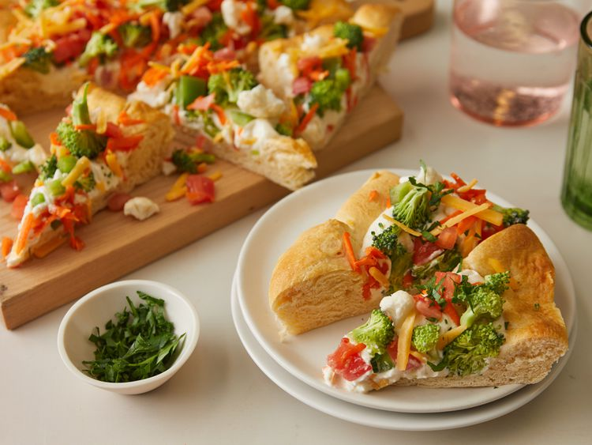

Vegetable Pizza

Description
Recipe submitted by JANMARIE in Allrecipes
Ingredients
-
2 (8 ounce) packages refrigerated crescent rolls
-
2 (8 ounce) packages cream cheese, softened
-
1 cup fresh broccoli, chopped
-
1 cup chopped tomatoes
-
1 cup chopped green bell pepper
-
1 ¾ cups shredded mozzarella cheese
-
1 cup chopped cauliflower
-
1 cup shredded carrots
-
1 cup shredded Cheddar cheese
Steps
- Gather all ingredients.
- Preheat the oven to 375 degrees F (190 degrees C).
- Roll out crescent roll dough onto a 9x13-inch baking sheet, and pinch together edges to form the pizza crust.
- Bake crust in the preheated oven for 12 minutes. Once finished cooking, remove crust from the oven and let cool for about 15 minutes without removing it from the baking sheet.
- Combine cream cheese, mayonnaise, and dry Ranch dressing mix in a small mixing bowl. Spread the mixture over the cooled crust.
- Arrange broccoli, tomatoes, bell pepper, cauliflower, shredded carrots, and Cheddar cheese over the cream cheese layer.
- Chill for 1 hour, slice, and serve.
Home